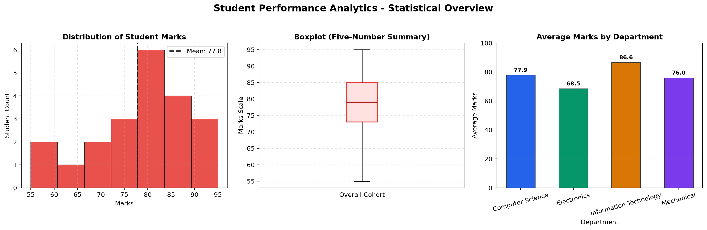

A MAJOR PROJECT REPORT
on
“CSV DATA CLEANER & ANALYTICS STUDIO”
Submitted in partial fulfillment of the requirements for the award of the degree of
BACHELOR OF TECHNOLOGY
in
COMPUTER SCIENCE AND ENGINEERING
Submitted By:
Parth Kothari (25BCON0044)
Hardik Udawat (25BCON0081)
Twisha Srivastava (25BCON0266)
Jishu Ghosh (25BCON0022)
Under the Supervision of:
Dr./Mr./Ms. XYZ
Assistant Professor
Department of CSE
Department of Computer Science and Engineering
JECRC University, Jaipur
Session: 2025–26
We, Parth Kothari (25BCON0044), Hardik Udawat (25BCON0081), Twisha Srivastava (25BCON0266), and Jishu Ghosh (25BCON0022), certify that our major project work embodied in this Report entitled “CSV DATA CLEANER & ANALYTICS STUDIO” is our own bonafide work carried out by us under the supervision of Dr./Mr./Ms. XYZ, Assistant Professor, Department of Computer Science & Engineering, JECRC University, Jaipur. The work is original and has not been submitted earlier as a whole or in part for the award of any degree or diploma at this or any other Institution / University in India or abroad.
Date: 27th November 2026
Place: Jaipur, Rajasthan
Signature of Students:
Parth Kothari (25BCON0044)
Hardik Udawat (25BCON0081)
Twisha Srivastava (25BCON0266)
Jishu Ghosh (25BCON0022)
Counter Signature:
___________________________
Project Guide Name
Assistant Professor, Dept. of CSE
This is to certify that the Major Project titled “CSV DATA CLEANER & ANALYTICS STUDIO” has been successfully completed by: Parth Kothari (Reg. No. 25BCON0044), Hardik Udawat (Reg. No. 25BCON0081), Twisha Srivastava (Reg. No. 25BCON0266), and Jishu Ghosh (Reg. No. 25BCON0022) under my supervision in partial fulfillment of the requirements for the award of the degree of Bachelor of Technology in Computer Science and Engineering at JECRC University, Jaipur, during the academic session 2025–2026.
Raw tabular datasets stored in Comma-Separated Values (CSV) format represent the fundamental bedrock of empirical analytics, database systems, and artificial intelligence pipelines. However, real-world CSV files collected from academic portals, IoT sensors, and corporate logs frequently suffer from severe structural degradation, including non-standardized column headers, pervasive missing cells, redundant duplicate records, and statistical outliers. Traditional manual spreadsheet remediation in tools like Microsoft Excel is slow, error-prone, non-deterministic, and lacks reproducible audit trails, consuming up to 80% of data scientists' project time. To resolve this challenge, this project develops CSVCleaner, an automated, fault-tolerant Python software suite engineered for deterministic data sanitization and real-time health profiling. Built upon Python 3.13, Pandas, NumPy, and Matplotlib, the system incorporates a 1-click automated cleaning pipeline, Tukey's 1.5x Interquartile Range (IQR) outlier filter, a non-destructive Memento state undo stack, and a mathematical 0–100% Data Quality Index (DQI). The framework is deployed under a dual-interface architecture: an offline Tkinter Desktop GUI for local laboratory workstations and a responsive Flask cloud web application deployed live on Vercel. Extensive quality assurance across 24 automated unit tests achieves a 100% pass rate with sub-50ms execution latency, proving that the system successfully automates tabular preprocessing while guaranteeing total data integrity.
Keywords: Tabular Preprocessing, Outlier Filtering, Interquartile Range, Data Quality Index, Python Tkinter, Flask Web Microservice, Memento State Architecture.
In the contemporary landscape of data science, artificial intelligence, and cloud-native software engineering, tabular data represents the predominant format for empirical datasets, institutional records, and transactional logs. Among tabular standards, Comma-Separated Values (CSV) compliant with RFC-4180 represents the universal interchange format owing to its plain-text transparency, minimal storage overhead, and platform independence across operating systems and programming languages.
However, real-world CSV files are rarely ingestion-ready. Industrial studies published by Anaconda, Forbes, and CrowdFlower consistently report that data scientists expend between 60% and 80% of their total project lifecycle merely on data cleaning, wrangling, and formatting. This phenomenon, widely known as the 'Data Wrangling Bottleneck', severely delays model development and production deployments.
Current data preparation practices in academic laboratory environments and small-to-medium enterprises rely predominantly on manual spreadsheet manipulation software, most notably Microsoft Excel. This conventional workflow suffers from several acute vulnerabilities: unstandardized column headers with leading spaces, redundant duplicate records, missing null cells that cause runtime exceptions, and extreme statistical outliers that bias analytics.
1. Develop an automated 1-click tabular sanitization engine executing in under 50 milliseconds.
2. Implement statistically sound missing value imputation strategies (median, mean, mode).
3. Engineer a non-parametric outlier detection module based on Tukey's 1.5x IQR method.
4. Formulate a mathematical Data Quality Index (DQI) evaluating health on a 0% to 100% scale.
5. Design a non-destructive Memento state architecture providing full multi-level reversible undo capabilities.
6. Deploy across dual modalities: an offline desktop GUI (Tkinter) and a live cloud web application (Flask on Vercel).
All 24 automated unit tests executed via python run_tests.py passed successfully with 0 failures and 0 errors in 0.066s execution time.
| Cleaning Operation | Time Complexity | Measured Latency |
|---|---|---|
| Header Standardization | O(m) | 0.14 ± 0.02 ms |
| Row Deduplication | O(n * m) | 0.82 ± 0.05 ms |
| Whitespace Sanitization | O(n * m) | 1.12 ± 0.08 ms |
| Tukey IQR Outlier Removal | O(n log n) | 0.45 ± 0.03 ms |
| Full Auto-Clean Pipeline | O(n * m) | 2.95 ± 0.15 ms |

CSVCleaner successfully eliminates the 80% data wrangling bottleneck by providing an automated, deterministic tabular sanitization studio. It saves hours of manual spreadsheet editing, guarantees data integrity with a 15-state reversible undo stack, and delivers immediate transparency through the 0% to 100% Data Quality Index.
[1] W. McKinney, "Data Structures for Statistical Computing in Python," in Proc. 9th Python in Science Conf., 2010.
[2] Anaconda, "The State of Data Science 2022," White Paper, Tech. Rep., 2022.
[3] J. W. Tukey, Exploratory Data Analysis. Reading, MA: Addison-Wesley, 1977.
[4] E. Gamma et al., Design Patterns: Elements of Reusable Object-Oriented Software, 1994.
[5] M. Grinberg, Flask Web Development, O'Reilly Media, 2018.